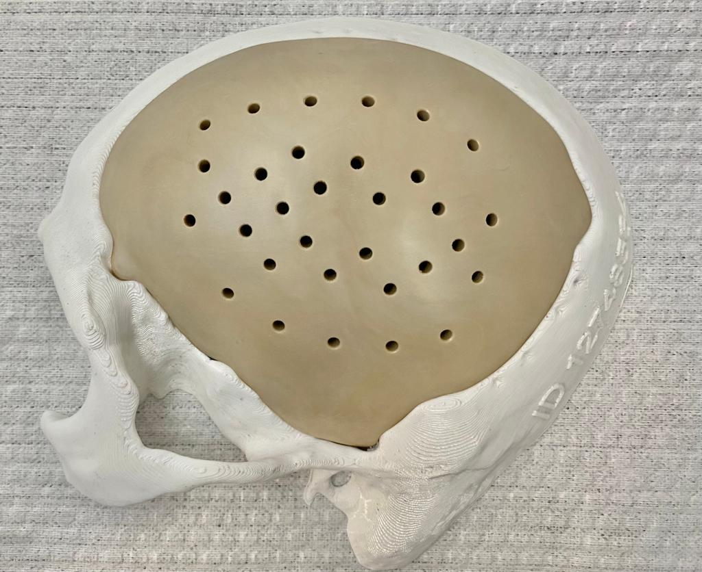

Bioactivas y Bioreabsorbibles

En Meraky comercializamos soluciones bioactivas y reabsorbibles que promueven la regeneración ósea gracias a su porosidad interconectada, permitiendo que el hueso crezca de forma natural mientras el material se degrada progresivamente.
Materiales utilizados
- Policaprolactona (PCL)
- Fosfato tricálcico (β-TCP)
- Estructura porosa interconectada similar a la del hueso
Meraky actúa como distribuidor de estas soluciones (no las fabrica). Marca del proveedor: Osteopore® u otros. Para indicaciones y técnica quirúrgica, consulte el IFU del fabricante.
Casos clínicos a la medida



Evidencia clínica: resultados pre y postoperatorios a 6 y 8 meses muestran regeneración ósea progresiva. Se recomienda el uso de aspirado de médula ósea junto con el implante, según criterio médico.